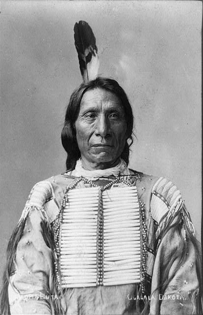

The misfortune of the Indians has been to come into contact with the most civilized and, I may add, the most avaricious people on the earth.
~ Alexis de Tocqueville

Can you imagine the desperation of Big Foot when the Seventh Cavalry found them and huddled them there? The children clinging to the women? The rolling up of those guns? The shouted commands? The dangerous, defiant looks of the young men?
Can you imagine the moment of the blast? Pregnant women shot right through?
Can you believe that they left Big Foot, chief of the Miniconjou, son of Lone Horn, dead in the snow for days?

The Lakota first met the whites in 1804, when Lewis and Clark led a party of them into camp that September. The whites gave the Lakota medals with the picture of the President on them. They explained that the President was their “great father” to the east, and that he owned all these lands. The Lakota were confused. The two men explained that the great father had purchased their lands from the French.
There were buffalo to the horizon when Red Cloud was born. The Lakota then were a proud and powerful people. A warrior tribe of nomadic hunters, of horse-masters, they wandered freely, establishing moveable villages with their tipis.
It was an organic life, determined by the seasons. In the summer, they met with the six other tribes of their nation. Together, these tribes formed the Oceti Sakowin, the Seven Council Fires, and they engaged in the sun dance, the most sacred of their seven traditions. And that was the way of the world. The Crows were their enemies; the Cheyennes were their friends. Wakan Tanka governed all.
There were buffalo to beyond the horizon when Sitting Bull was born.
Though we know them as the Sioux, they are not the Sioux. [“Sioux” is what the French called them after hearing the Chippewa, their enemies to the east, refer to them as the Nadowesioux, or little snakes.] They are the seven tribes of the Oceti Sakowin, “the Seven Council Fires.”
The Lakota are the westernmost of the Oceti Sakowin. Together with the Yanktons, Yanktonais, Sissetons, Mdewakantons, Wahpetons, and Wahpekutes, they form a great nation united in the shared language of Lakota or, in the dialect of the central and eastern tribes, Nakota and Dakota.
Lakota means “allies.”
The Lakota are divided into seven bands: the Sihisapas, the Miniconjous, the Hunkpapas, the Sans Arcs, the Brulés, the Two Kettles, and the Oglalas.
Big Foot was a Miniconjou.
Red Cloud and Crazy Horse were Oglalas.
Sitting Bull was a Hunkpapa.
It was 1849, but the Lakota didn’t know that. They didn’t measure time that way. Nor did they know of California and the irresistible pull of its gold. What they did know was that, suddenly, there were many whites in their lands. Disturbing the buffalo. Bringing disease.
The whites’ travel through their lands was disrupting things. In addition to deaths caused by cholera, measles, and the other diseases that they carried, the presence of the whites was upsetting the buffalp. The Lakota could not tolerate this. They began to get restless. To keep them from getting hostile, the whites called a big meeting.
For two weeks, the whites entertained thousands of American Indians at the mouth of the Horse Creek in Wyoming. They gave them food, weapons, and utensils. They also passed around a paper and asked for it to be signed. The Indians, who couldn’t read, trusted the whites and “touched the pen.” By this, they understood that they would be given annual payments of money in exchange for living in a big land where the whites would let them be.
After the council at Horse Creek, there was a time of peace - until, like in 1849, the whites once again found gold. This time it was in Montana. John Bozeman blazed a trail to get there. This trail went through prime buffalo hunting ground.
The Lakota started bothering the whites, who built forts to protect the trail. Red Cloud emerged. He said, dismantle the forts and abandon the trail.
The whites didn’t listen.
Red Cloud went to war.
